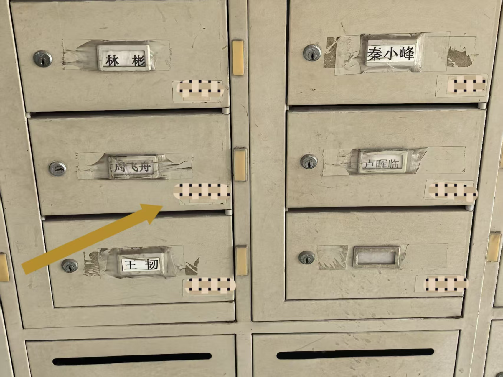
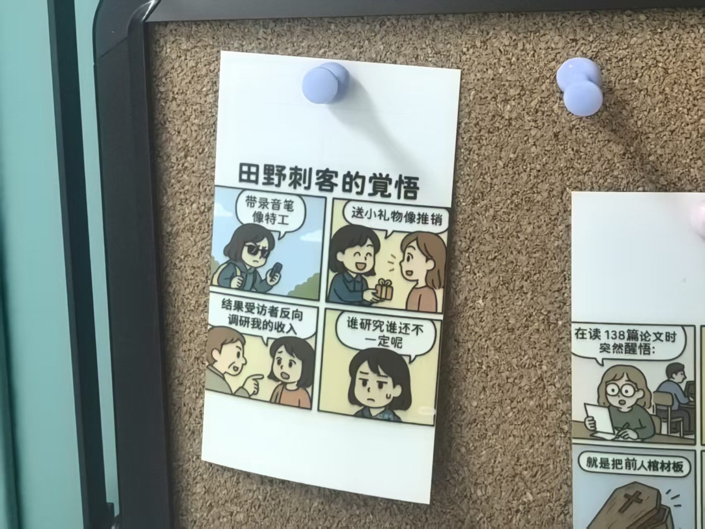
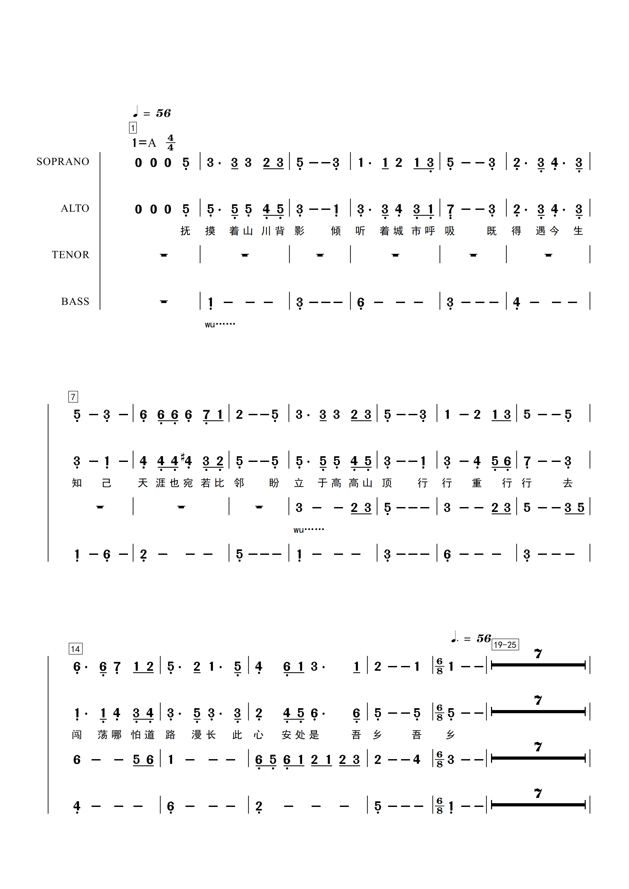
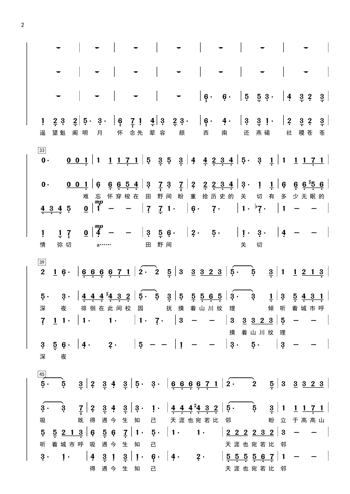
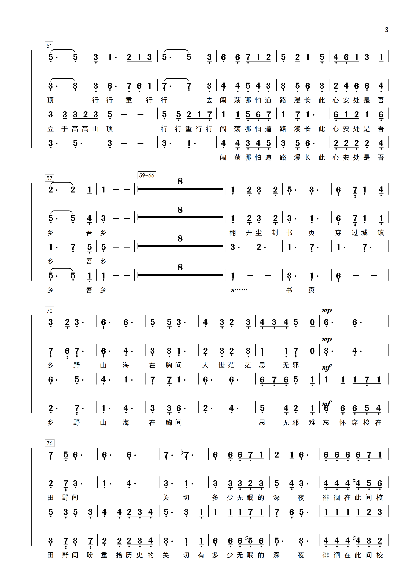
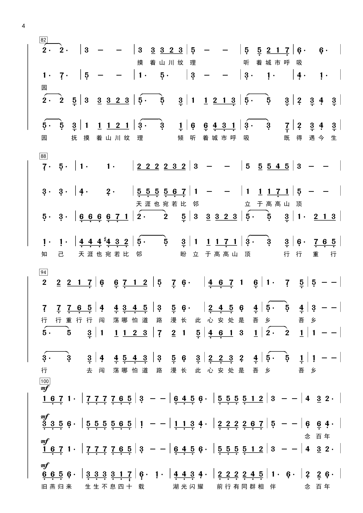
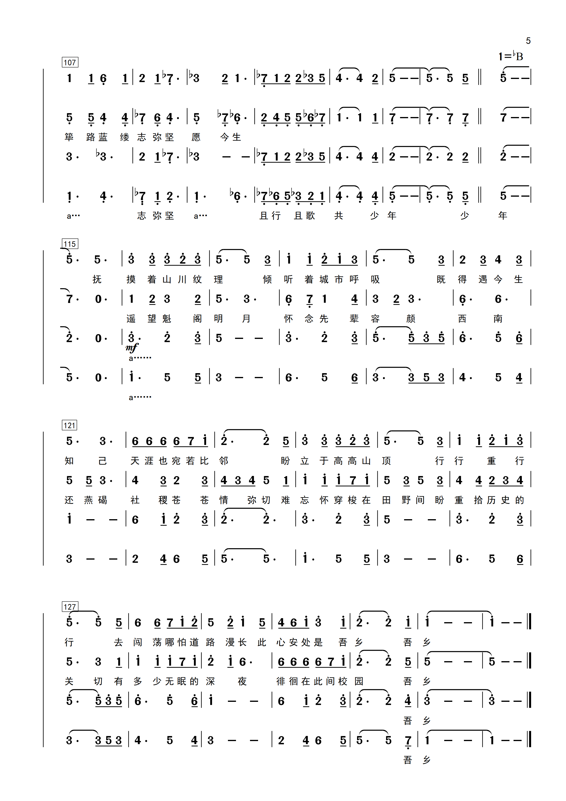

A2 · 一层走廊
主线先从飞舟老师信箱里借一个门牌号。找到那扇门后，请读出它属于第几个巡查点。

切换右上角「改动前 / 改动后」直接对比同一屏的差异。纸团、印章、烟花、票根、雾过渡等已实现的亮点保留不动；本轮只做：入楼首屏、答题滚动揭示与吸顶进度、终章节目单、奖励落幕收尾，以及一批低成本细节统一。
这是当前最大的真实缺口：现在登录屏是纯白文字表单、没有图。改动后用信箱实拍铺底 + 磨砂登录卡，把仪式感提到第一视觉信号。
a2-zhou-feizhou-mailbox.jpg）作 hero 背景 + 深松石压暗渐变↑ 当前显示的是「改动前」：纯文字表单。切到「改动后」看 hero。
题卡布局、衬线题面、卡片阴影已是现状。改动后让进度卡吸顶常驻、题卡进入视口时轻微上浮一次、题图模糊转清晰、冷却倒计时定宽不抖。
sticky 吸顶，滚动时进度始终可见（手机内向下滚动体验）loading=lazy + 模糊→清晰过渡，减少突兀tabular-nums 定宽，按钮不再左右抖先从飞舟老师信箱里借一个门牌号。找到那扇门后，请读出它属于第几个巡查点。

谁提出了"文化资本"？把他的姓写进答案。
把三扇门的编号相乘，结果是通往下一层的口令。

沿着走廊尽头的窗，数一数挂着几盏灯。
先从飞舟老师信箱里借一个门牌号。找到那扇门后，请读出它属于第几个巡查点。
谁提出了"文化资本"？把他的姓写进答案。
把三扇门的编号相乘，结果是通往下一层的口令。
现状是普通折叠的简谱网格。改动后给终章一个深色幕布头（轻量氛围允许的转深节点），简谱缩略图错峰揭示，并把六枚回声印章排成一条"路径"。
.final-band（深松石 + 暖铜微光），仪式感转深终 章





烟花、暖铜边票根、转盘 5s settle 都已实现。改动后只做收尾：票根登场动画、火花原点收束到票根上方，让最终凭证更像可纪念物。
ticketIn 登场动画（上浮缩放一次）